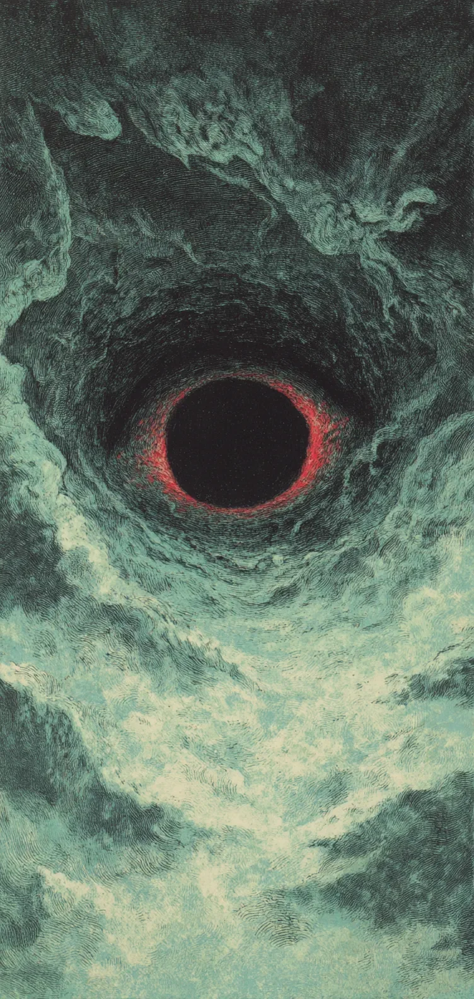

‘은하 택시 402호’의 엔진이 쿨럭거리며 멈춰 섰다. 김 씨는 조종석 옆에 놓인 기름진 피자 상자를 열었다. 창밖에는 섬세하고 날카로운 은빛 소용돌이가 몰아치고 있었다. 우주의 거대한 눈동자, 블랙홀이었다. 김 씨는 한숨을 내쉬며 마지막 남은 하와이안 피자 한 조각을 진공 상태의 허공으로 던졌다.
[’Space Taxi No. 402’s engine coughed and died. Mr. Kim opened the greasy pizza box sitting next to the cockpit. Outside the window, a delicate and sharp silver vortex was raging. It was the great pupil of the universe, a black hole. Mr. Kim sighed and threw the last remaining slice of Hawaiian pizza into the vacuum of space.]
거대한 어둠이 움츠러들더니 피자를 낚아챘다. 1초 뒤, 우주선 선체가 비명 같은 금속음을 냈다. 블랙홀이 피자를 뱉어낸 것이다. 파인애플 조각들이 얼어붙은 채 조종석 유리에 부딪혀 튕겨 나갔다. “저 거대한 구멍도 파인애플 피자는 거르는군,” 김 씨가 중얼거렸다. 그러자 블랙홀의 가장자리가 털실 뭉치처럼 부풀어 오르더니, 굶주린 짐승의 혓바닥처럼 우주선의 날개를 핥기 시작했다. 선체가 차갑게 진동했다.
[The massive darkness recoiled and then snatched the pizza. A second later, the ship’s hull emitted a metallic scream. The black hole had spat the pizza out. Frozen pineapple chunks bounced off the cockpit glass. “Even that giant hole skips pineapple pizza,” Mr. Kim muttered. Then, the edge of the black hole puffed up like a ball of yarn and began to lick the ship’s wing like the tongue of a hungry beast. The hull vibrated coldly.]
경고등이 붉은 핏물처럼 조종실을 적셨다. 김 씨는 시트 밑에 숨겨두었던, 3년 된 묵은지 통을 꺼냈다. 뚜껑을 열자 맵싸하고 시큼한 냄새가 좁은 조종실을 가득 채웠다. 그가 김치 통을 우주로 밀어 넣자, 블랙홀은 그것을 조심스럽게 빨아들였다. 잠시 후, 은하계 전체를 흔드는 만족스러운 트림 소리가 울려 퍼졌다. 어둠은 고양이처럼 몸을 말더니 깊은 잠에 빠졌고, 우주는 다시 기분 나쁠 정도로 고요해졌다.
[Warning lights soaked the cockpit like red blood. Mr. Kim pulled out a container of three-year-old aged kimchi he had hidden under the seat. As he opened the lid, a spicy and sour smell filled the cramped cockpit. When he pushed the kimchi container into space, the black hole carefully inhaled it. A moment later, a satisfied burp that shook the entire galaxy echoed. The darkness curled up like a cat and fell into a deep sleep, and the universe became disturbingly silent once again.]